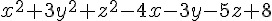

實作：通用的爬山演算法架構
前言
在上一篇文章中，我們介紹了如何用 JavaScript 來尋找「單變數函數」的最高點。在這篇文章中，我們會將這個程式抽象化之後，成為一個通用的爬山演算法架構，以便能夠尋找任何函數的最高點。
通用的爬山演算法架構
檔案：HillClimbing.js
var hillClimbing = function() {} // 爬山演算法的物件模版 (類別)
hillClimbing.prototype.run = function(s, maxGens, maxFails) { // 爬山演算法的主體函數
console.log("s=%s", s); // 印出初始解
var fails = 0; // 失敗次數設為 0
// 當代數 gen<maxGen，且連續失敗次數 fails < maxFails 時，就持續嘗試尋找更好的解。
for (var gens=0; gens<maxGens && fails < maxFails; gens++) {
var snew = s.neighbor(); // 取得鄰近的解
var sheight = s.height(); // sheight=目前解的高度
var nheight = snew.height(); // nheight=鄰近解的高度
if (nheight >= sheight) { // 如果鄰近解比目前解更好
s = snew; // 就移動過去
console.log("%d: %s", gens, s); // 印出新的解
fails = 0; // 移動成功，將連續失敗次數歸零
} else // 否則
fails++; // 將連續失敗次數加一
}
console.log("solution: %s", s); // 印出最後找到的那個解
return s; // 然後傳回。
}
module.exports = hillClimbing; // 將爬山演算法的類別匯出。抽象的解答類別
檔案：solution.js
var Solution = function(v) { // 解答的物件模版 (類別)
this.v = v; // 參數 v 為解答的資料結構
}
Solution.prototype.step = 0.01; // 每一小步預設走的距離
Solution.prototype.height = function() { // 爬山演算法的高度函數
return -1*this.energy(); // 高度 = -1 * 能量
}
module.exports = Solution; // 將解答類別匯出。實例 1 ：求解平方根
在此，我們將以求解 4 的平方根為例，測試一下上述演算法是否能夠找到正確的解答。
檔案：solutionNumber.js (單變數函數，求平方根)
var Solution = require("./solution"); // 引入解答類別
Solution.prototype.neighbor = function() { // 單變數解答的鄰居函數。
var x = this.v, dx=this.step; // x:解答 , dx : 移動步伐大小
var xnew = (Math.random() > 0.5)?x+dx:x-dx; // 用亂數決定向左或向右移動
return new Solution(xnew); // 建立新解答並傳回。
}
Solution.prototype.energy = function() { // 能量函數
var x = this.v; // x:解答
return Math.abs(x*x-4); // 能量函數為 |x^2-4|
}
Solution.prototype.toString = function() { // 將解答轉為字串，以供印出觀察。
return "energy("+this.v.toFixed(3)+")="+this.energy().toFixed(3);
}
module.exports = Solution; // 將解答類別匯出。檔案：hillClimbingNumber.js
var hillClimbing = require("./hillClimbing"); // 引入爬山演算法類別
var solutionNumber = require("./solutionNumber"); // 引入平方根解答類別
var hc = new hillClimbing(); // 建立爬山演算法物件
// 執行爬山演算法 (從「解答=0.0」開始尋找, 最多十萬代、失敗一千次就跳出。
hc.run(new solutionNumber(0.0), 100000, 1000);執行結果：
D:\Dropbox\Public\web\ai\code\optimize>node hillClimbingNumber.js
s=energy(0.000)=4.000
0: energy(-0.010)=4.000
2: energy(-0.020)=4.000
3: energy(-0.030)=3.999
10: energy(-0.040)=3.998
12: energy(-0.050)=3.998
....
366: energy(-1.910)=0.352
371: energy(-1.920)=0.314
375: energy(-1.930)=0.275
380: energy(-1.940)=0.236
382: energy(-1.950)=0.197
388: energy(-1.960)=0.158
389: energy(-1.970)=0.119
391: energy(-1.980)=0.080
392: energy(-1.990)=0.040
394: energy(-2.000)=0.000
solution: energy(-2.000)=0.000您可以看到上述程式最後找到 4 的平方根為 -2，這算是對的，因為我們在能量函數中沒有規定平方根必須是正的，如果要求要是正的，那就可以為負數加上一個懲罰函數就行了。
實例 2 ：多變數函數的最佳化
在此，我們將以求解  這個函數的最低點，看看上述演算法對多變數函數是否能正常運作。
檔案：solutionArray.js
var Solution = require("./solution"); // 引入抽象的解答類別
Solution.prototype.neighbor = function() { // 多變數解答的鄰居函數。
var nv = this.v.slice(0); // nv=v.clone()=目前解答的複製品
var i = Math.floor(Math.random()*nv.length);// 隨機選取一個變數
if (Math.random() > 0.5) // 擲骰子決定要往左或往右移
nv[i] += this.step;
else
nv[i] -= this.step;
return new Solution(nv); // 傳回新建的鄰居解答。
}
Solution.prototype.energy = function() { // 能量函數
var x=this.v[0], y=this.v[1], z=this.v[2];
return x*x+3*y*y+z*z-4*x-3*y-5*z+8; // (x^2+3y^2+z^2-4x-3y-5z+8)
}
var numbersToStr=function(array, precision) { // 將數字陣列轉為字串的函數。
var rzStr = "";
for (var i=0; i<array.length; i++) {
if (array[i]>=0)
rzStr+=" "+array[i].toFixed(precision)+" ";
else
rzStr+=array[i].toFixed(precision)+" ";
}
return rzStr;
}
Solution.prototype.toString = function() { // 將解答轉為字串的函數，以供列印用。
return "energy("+numbersToStr(this.v, 3)+")="+this.energy().toFixed(3);
}
module.exports = Solution; // 將解答類別匯出。檔案： hillClimbingArray.js
var hillClimbing = require("./hillClimbing"); // 引入爬山演算法類別
var solutionArray = require("./solutionArray"); // 引入多變數解答類別 (x^2+3y^2+z^2-4x-3y-5z+8)
var hc = new hillClimbing(); // 建立爬山演算法物件
// 執行爬山演算法 (從「解答(x,y,z)=(1,1,1)」開始尋找, 最多十萬代、失敗一千次就跳出。
hc.run(new solutionArray([1,1,1]), 100000, 1000);執行結果
s=energy( 1.000 1.000 1.000 )=1.000
0: energy( 1.000 1.000 1.010 )=0.970
1: energy( 1.000 1.000 1.020 )=0.940
3: energy( 1.000 1.000 1.030 )=0.911
8: energy( 1.000 1.000 1.040 )=0.882
9: energy( 1.000 1.000 1.050 )=0.853
...
889: energy( 2.000 0.500 2.450 )=-2.998
894: energy( 2.000 0.500 2.460 )=-2.998
907: energy( 2.000 0.500 2.470 )=-2.999
917: energy( 2.000 0.500 2.480 )=-3.000
920: energy( 2.000 0.500 2.490 )=-3.000
924: energy( 2.000 0.500 2.500 )=-3.000
solution: energy( 2.000 0.500 2.500 )=-3.000您可以發現這個程式最後找到的解答是 (x, y, z)=(2, 0.5, 2.5)，其能量值為 -3，也就是高度值為 3。
實例 3 ：線性聯立方程組求解
本範例求解的線性聯立方程組，可以用矩陣描述如下：
這種線性聯立方程組，可以寫為矩陣相乘的形式如下：
其中的 A 為矩陣、x 與 b 均為「列向量」。
這類問題想要求的答案是 x 的值，也就是在 A 與 b 都已知的情況之下，求符合條件的 x 是多少？
我們使用的測試範例如下：
A=[[1,1],[1,-1]]
B=[[5][1]]也就是求下列方程組的解答。
x1+x2=5
x1-x2=1以下是我們表示解答的程式碼，其中引入了 matrix 這個矩陣相乘的函式庫。
檔案：solutionEquations.js
var Matrix = require("./matrix");
var Solution = require("./solution"); // 引入抽象的解答類別
// A X = B ，求 X 是多少？
// A=[[1,1],[1,-1]] B=[[5][1]]，也就是求：
// x1+x2=5
// x1-x2=1
// 的解答
var A = new Matrix([[1,1],[1,-1]]);
var B = new Matrix([[5,1]]).transpose();
var log = console.log;
Solution.zero = function() {
return new Solution(Matrix.create(2,1,0));
}
Solution.prototype.neighbor = function() { // 多變數解答的鄰居函數。
var nx = new Matrix(this.v.m); // 複製目前解的矩陣
var i = Math.floor(Math.random()*nx.rows());// 隨機選取一個變數
if (Math.random() > 0.5) // 擲骰子決定要往左或往右移
nx.m[i][0] += this.step;
else
nx.m[i][0] -= this.step;
return new Solution(nx); // 傳回新建的鄰居解答。
}
Solution.prototype.energy = function() { // 能量函數:計算 ||AX-B||，也就是 ||Y-B||
var X = this.v;
var Y = A.mul(X);
return Y.sub(B).norm();
}
Solution.prototype.toString = function() { // 將解答轉為字串的函數，以供列印用。
return "energy("+this.v.transpose().toString().replace("\n", "")+")="+this.energy().toFixed(3);
}
module.exports = Solution; // 將解答類別匯出。接著是爬山演算法的主體，我們從解答 x=[0,0] 開始尋找：
檔案：hillClimbingEquations.js
var hillClimbing = require("./hillClimbing"); // 引入爬山演算法類別
var solutionEquations = require("./solutionEquations"); // 引入線性聯立方程組解答類別
var hc = new hillClimbing(); // 建立爬山演算法物件
// 執行爬山演算法 (從「解答 x=(0,0)」開始尋找, 最多十萬代、失敗一千次就跳出。
hc.run(solutionEquations.zero(), 100000, 1000);最後我們列出整個矩陣相乘的函數庫原始碼：
檔案：matrix.js
var log = console.log;
var Matrix=function(mat) {
var m = [];
for (var i=0; i<mat.length; i++) {
m[i] = mat[i].slice(0);
}
this.m = m;
}
Matrix.prototype.precision = 3;
Matrix.prototype.toStr=function(precision) {
var rzStr = "", m = this.m;
for (var i=0; i<m.length; i++) {
var rowStr = ""
for (var j=0; j<m[i].length; j++)
rowStr += m[i][j].toFixed(precision)+" ";
rzStr += "["+rowStr.trim()+"]\n";
}
return rzStr;
}
Matrix.prototype.rows=function() { return this.m.length; }
Matrix.prototype.cols=function() { return this.m[0].length; }
Matrix.prototype.toString=function() { return this.toStr(this.precision); }
Matrix.create=function(rows, cols, value) {
var m = [];
for (var i=0; i<rows; i++) {
m[i] = [];
for (var j=0; j<cols; j++)
m[i][j] = value;
}
return new Matrix(m);
}
Matrix.prototype.transpose=function() {
var m = this.m;
var r = Matrix.create(m[0].length, m.length, 0);
for (var i=0; i<m.length;i++) {
for (var j=0; j<m[i].length;j++)
r.m[j][i] = m[i][j];
}
return r;
}
Matrix.prototype.mul=function(mat2) {
var m = this.m, m2=mat2.m;
var r = Matrix.create(m.length, m2[0].length, 0);
for (var i=0; i<m.length;i++)
for (var j=0; j<m[i].length; j++)
for (var k=0; k<m2[j].length; k++)
r.m[i][k] += m[i][j]*m2[j][k];
return r;
}
Matrix.prototype.add=function(mat2) {
var m = this.m, m2 = mat2.m;
var r = Matrix.create(m.length, m[0].length, 0);
for (var i=0; i<m.length; i++)
for (var j=0; j<m[i].length; j++)
r.m[i][j] = m[i][j]+m2[i][j];
return r;
}
Matrix.prototype.sub=function(mat2) {
return this.add(mat2.neg());
}
Matrix.prototype.sum=function() {
var s=0;
for (var i=0; i<m.length; i++)
for (var j=0; j<m[i].length; j++)
s += m[i][j];
return s;
}
Matrix.prototype.norm=function() {
var s=0, m=this.m;
for (var i=0; i<m.length; i++)
for (var j=0; j<m[i].length; j++)
s += m[i][j]*m[i][j];
return s;
}
Matrix.prototype.neg=function() {
var r = Matrix.create(this.rows(), this.cols(), 0);
for (var i=0; i<r.m.length; i++)
for (var j=0; j<r.m[i].length; j++)
r.m[i][j] = -1*this.m[i][j];
return r;
}
Matrix.test=function() {
var m1=new Matrix([[1,1,1], [1,2,3]]);
var m2=m1.transpose();
Matrix.prototype.precision = 0;
log("=====m1========\n%s", m1);
log("=====m2========\n%s", m2);
log("=====m1+m1=====\n%s", m1.add(m1));
log("=====m1*m2=====\n%s", m1.mul(m2));
}
// Matrix.test();
module.exports = Matrix;執行結果如下：
s=energy([0.000 0.000])=26.000
1: energy([0.000 0.010])=25.920
5: energy([0.000 0.020])=25.841
6: energy([0.000 0.030])=25.762
7: energy([0.000 0.040])=25.683
9: energy([0.010 0.040])=25.563
...
655: energy([1.600 1.760])=4.035
656: energy([1.600 1.770])=4.026
659: energy([1.610 1.770])=3.970
660: energy([1.620 1.770])=3.915
661: energy([1.630 1.770])=3.860
664: energy([1.640 1.770])=3.805
665: energy([1.640 1.780])=3.796
666: energy([1.640 1.790])=3.787
...
1176: energy([2.970 2.000])=0.002
1184: energy([2.980 2.000])=0.001
1197: energy([2.990 2.000])=0.000
1205: energy([3.000 2.000])=0.000
solution: energy([3.000 2.000])=0.000您可以看到最後找到的解為 x=[3, 2] ，這個結果確實是下列方程組的解答：
x1+x2=5
x1-x2=1於是我們用這個爬山演算法的架構解決了線性聯立方程組的求解問題。
結語
當然、上述的架構不只可以解這些問題，甚至可以用來解像「線性規劃、神經網路優化....」等等各式各樣的問題，前提是您必須自行設計 solution 類別的 neighbor(), energy() 與 toString() 函數，然後寫個主程式呼叫爬山演算法就行了。
參考文獻
【本文由陳鍾誠取材並修改自 [維基百科]，採用創作共用的 姓名標示、相同方式分享 授權】